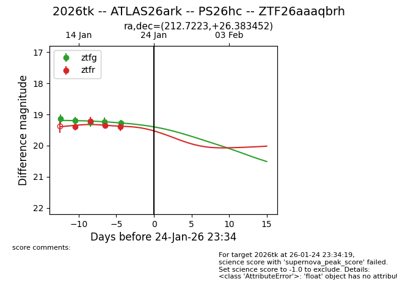
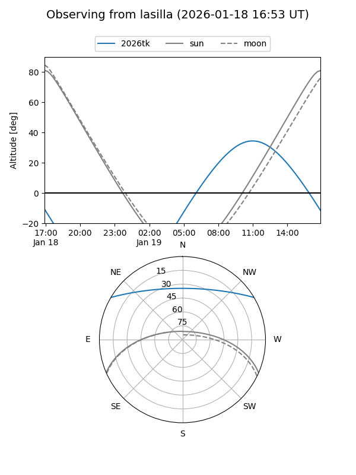
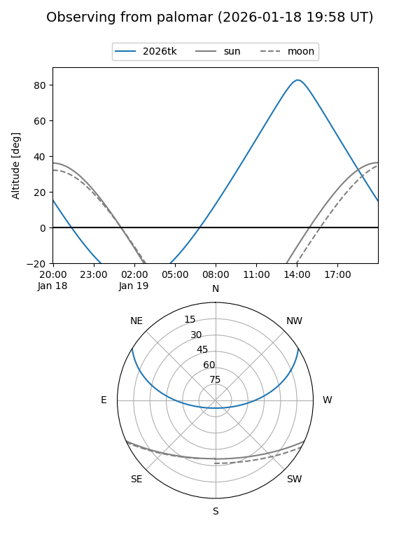
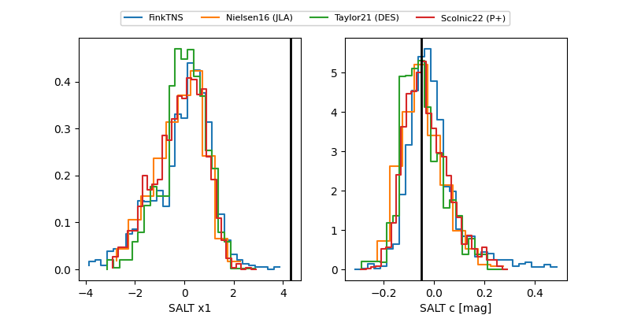

2026tk
Target 2026tk at 2026-01-18 14:35
Aliases and brokers:
FINK: link
Lasair: link
ALeRCE: link
TNS: link
YSE: link
alt names
ZTF26aaaqbrh (ztf,fink_ztf)
2026tk (tns,yse)
ATLAS26ark (atlas)
PS26hc (panstarrs)
Coordinates:
equatorial (ra, dec) = 212.7223,+26.38345
equatorial (HMS+DMS) = 14:10:53.34,+26:23:00.43
galactic (l, b) = (35.0585,+72.26660)
Flags:
Photometry:
last ztfg=19.24, ztfr=19.36
4 ztfg, 3 ztfr detections
Lightcurve

Visibility


Additional plots
